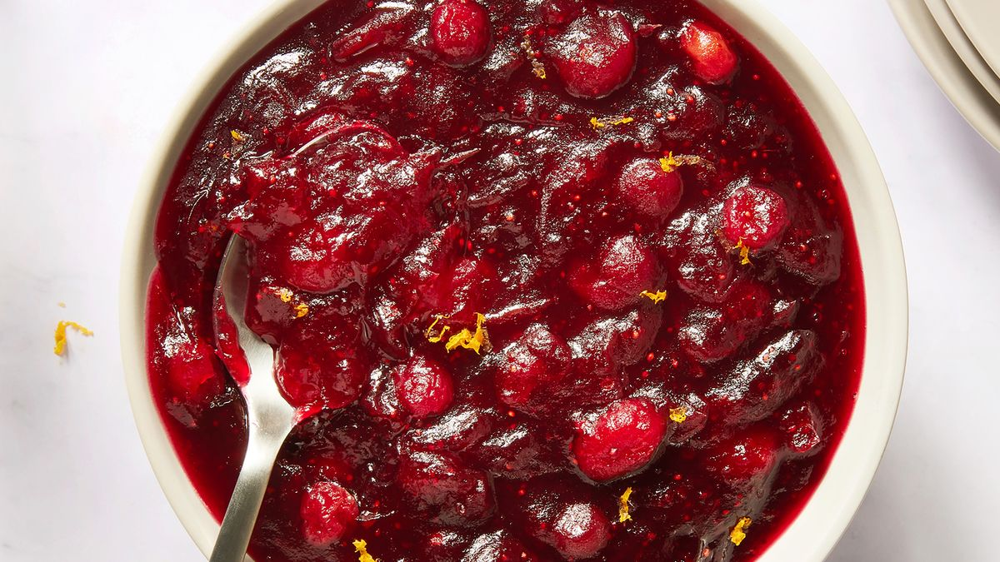

Cranberry sauce

Description
Cranberry sauce or cranberry jam is a sauce or relish made out of cranberries,
commonly served as a condiment or a side dish with Thanksgiving dinner in North America
and Christmas dinner in the United Kingdom and Canada.
Ingredients
- 12 ounces cranberries
- 1 cup white sugar
- 1 cup orange juice
Steps
- Gather all ingredients.
- Dissolve sugar in the orange juice in a medium saucepan over medium heat.
- Stir in the cranberries and cook until they start to pop, about 10 minutes.
- Remove from heat and place sauce in a bowl. It will thicken as it cools.
- Enjoy!
Back